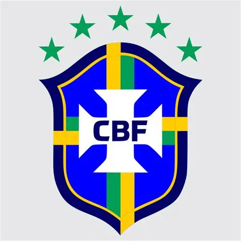
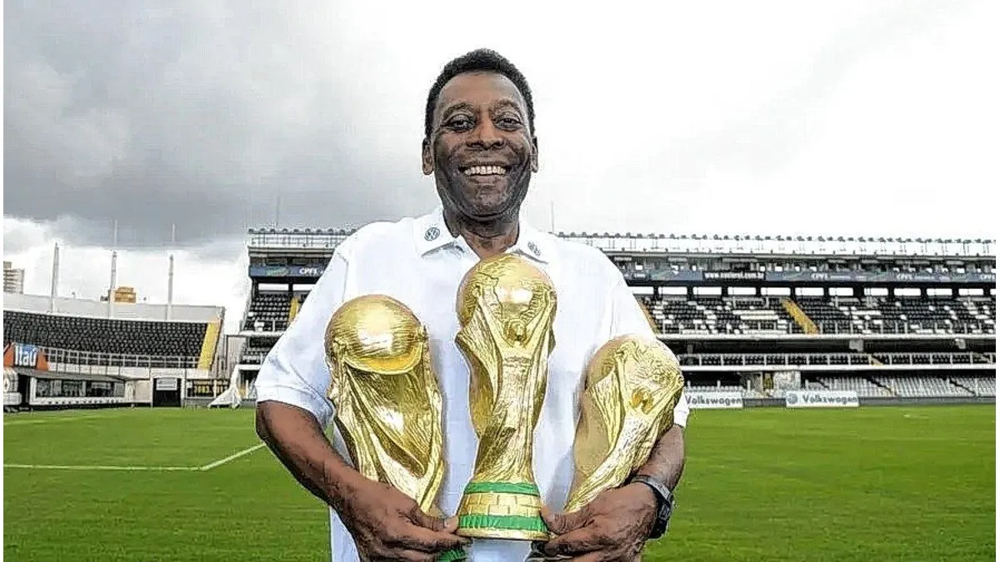

Probabilidade do Brasil ser hexa
O Brasil é a única seleção que já conquistou cinco Copas do Mundo e, por isso, sempre é considerado um dos favoritos ao título. Com jogadores talentosos e uma grande tradição no futebol, a seleção tem boas chances de conquistar o hexacampeonato. No entanto, a competição é muito disputada e exige um ótimo desempenho em todos os jogos.🏆⚽


⚽ O Brasil na Busca pelo Hexacampeonato
Para se tornar hexa, o Brasil precisará passar por várias fases do mata-mata, enfrentando seleções cada vez mais fortes. Dependendo dos resultados da Copa, a Seleção Brasileira pode cruzar o caminho de equipes tradicionais como Argentina, França, Inglaterra, Espanha ou Alemanha. Cada partida será decisiva, e apenas as melhores equipes avançarão. Com talento, dedicação e o apoio da torcida, o Brasil sonha em vencer todos os desafios e conquistar o tão esperado sexto título mundial.
O hexacampeonato é o grande objetivo da Seleção Brasileira. Com uma história vitoriosa e jogadores talentosos, o Brasil busca conquistar sua sexta Copa do Mundo e aumentar ainda mais sua tradição no futebol mundial.
🏆 Títulos do Brasil
- 1958 - Suécia
- 1962 - Chile
- 1970 - México
- 1994 - Estados Unidos
- 2002 - Coreia do Sul e Japão
Curiosidades
- O Brasil é a única seleção que participou de todas as Copas do Mundo.
- A Seleção Brasileira é a maior campeã do mundo, com 5 títulos.
- O Brasil conquistou as Copas de 1958, 1962, 1970, 1994 e 2002.
- O Brasil revelou grandes craques como Pelé, Zico, Romário, Ronaldo, Ronaldinho e Neymar.
- Pelé é o único jogador da história a conquistar 3 Copas do Mundo.